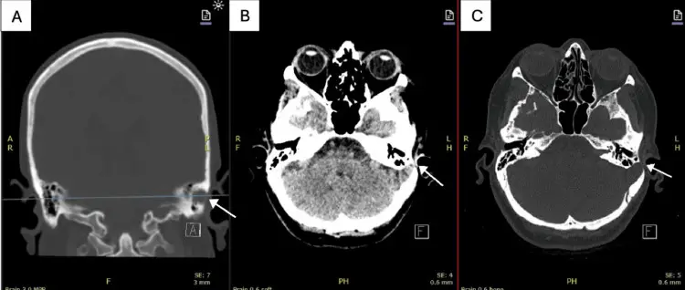
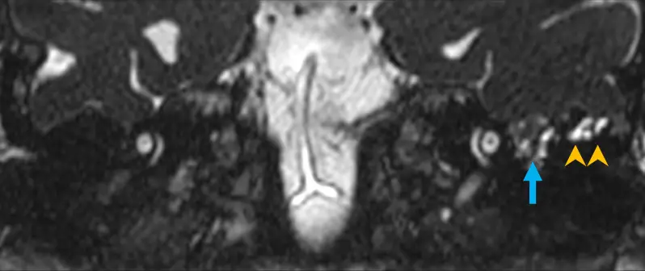
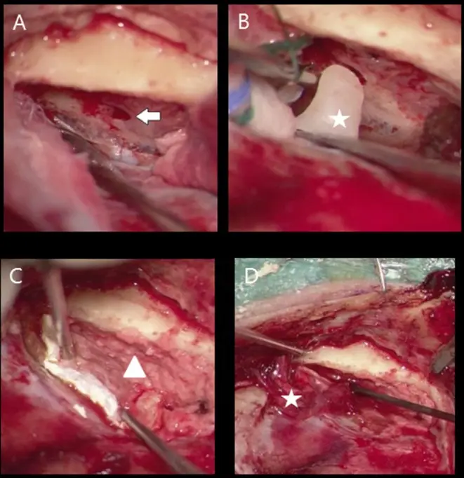

DX.10 — Fuite otologique de liquide cérébrospinal 🚩 E1
Un écoulement clair par l’oreille après un traumatisme crânien impose de rechercher une brèche méningée, dont l’otoliquorrhée est la conséquenceS4. L’Office fédéral de la santé publique (OFSP) compte la fistule cérébrospinale parmi les atteintes de la barrière hémato-encéphalique qui justifient la vaccination contre les pneumocoquesS2. Le médecin protège donc l’oreille, prouve la nature du liquide, localise la brèche et prévient la méningite.
1. Définition
Le Collège français d’oto-rhino-laryngologie (ORL) définit l’otoliquorrhée comme un écoulement de liquide céphalorachidien par le conduit auditif externe, dû à une brèche méningéeS4. Le liquide cérébrospinal (LCR) passe alors à travers la dure-mère et l’os temporal, puis atteint l’oreille moyenneS4. Lorsque le tympan reste fermé, le liquide s’accumule dans la caisse et se présente comme un épanchement de l’oreille moyenne, sans écoulement visibleS9. Le terme de fuite otologique comprend ici ces deux présentations.
2. Épidémiologie (Suisse, puis Europe)
Le service d’ORL des Hôpitaux universitaires de Genève (HUG) cite l’écoulement de LCR par l’oreille parmi les manifestations d’une fracture de la base du crâne qui passe par le rocherS1. Le Collège français indique que les fractures longitudinales du rocher représentent 70 à 90 % des cas, et les fractures transversales 10 à 30 %S4. Les chiffres clés, les groupes à risque et l’histoire naturelle justifient le rang 🚩 E1.
Chiffres clés, de la Suisse vers l’Europe
Le tableau rassemble les seuls chiffres lus ; chacun décrit une population précise.
| Chiffre | Population | Année | Source |
|---|---|---|---|
| 70 à 90 % de fractures longitudinales, 10 à 30 % de transversales | Fractures du rocher | 2014 | Collège français d’ORLS4 |
| Tarissement spontané dans 95 à 100 % des cas | Fuites post-traumatiques du rocher | 2019 | La Revue du PraticienS5 |
| 46 cas idiopathiques, 29 postopératoires, 10 sur cholestéatome et 3 traumatiques | 88 patients opérés d’une hernie méningo-encéphalique du temporal, Madrid | 2000-2023 | MazzoccoS10 |
| Méningite chez 16 patients ; manifestations menaçant la vie dans 34,5 % des cas | Même série madrilène | 2025 | MazzoccoS10 |
| Défaut centré sur le tegmen tympani dans 55 % des cas | 18 patients, Londres | 2023 | SrinivasanS11 |
| Délai médian de 5,3 mois entre les premiers symptômes et le diagnostic | 13 patients porteurs d’une fuite spontanée, Utrecht | 2012-2018 | ThomeerS12 |
| Antibioprophylaxie sans effet significatif sur la méningite | 5 essais, 208 patients | 2015 | CochraneS6 |
Groupes à risque
Le traumatisé crânien grave forme le premier groupe, car la fracture du rocher accompagne souvent d’autres lésions du crâne et de l’encéphale, selon les HUGS1. Le patient opéré de l’oreille ou de la base du crâne forme le deuxième groupe : 29 des 88 patients de la série madrilène avaient une hernie postopératoireS10.
Le troisième groupe réunit les adultes en surpoids porteurs d’une forme spontanée ; l’indice de masse corporelle moyen atteignait 30 kg/m² à MadridS10. Tous les patients madrilènes au-delà de 34,99 kg/m² avaient une forme idiopathiqueS10. À Utrecht, quatre des dix patients dont l’indice était mesuré dépassaient 30 kg/m²S12. La série londonienne trouvait au moins deux signes IRM (imagerie par résonance magnétique) d’hypertension intracrânienne idiopathique chez 38,9 % des patientsS11. Le cholestéatome, traité dans le DX.8, peut aussi éroder le tegmen : dix cas madrilènes en relevaientS10.
Histoire naturelle
La fuite post-traumatique se tarit spontanément dans 95 à 100 % des cas, ce qui fonde le traitement conservateur initialS5. La fracture de la capsule labyrinthique osseuse ne consolide jamais, selon le Collège français, ce qui laisse un risque de méningite otogène durableS4. La forme spontanée se révèle tard, parfois par une méningite, et la série madrilène y trouvait des hernies multiples surtout dans les formes idiopathiquesS10.
Le cas bâlois et sa revue systématique rappellent qu’une seconde brèche, distincte de la première, peut se révéler après une réparation réussieS3. Une femme de 71 ans y présentait une otoliquorrhée et une rhinoliquorrhée après une fracture horizontale du rocher gaucheS3. Après réparation et dix semaines sans symptôme, la rhinorrhée claire est revenue, car une méningo-encéphalocèle controlatérale préexistante s’était révéléeS3. La revue systématique associée ne retenait que dix cas publiés, presque tous dus à une méningo-encéphalocèleS3.
3. Physiopathologie
Le LCR baigne l’encéphale sous la dure-mère, et seule une fine lame osseuse, le tegmen, sépare la fosse cérébrale moyenne de l’oreille moyenne ; la base à connaître montre ce voisinageS11. Une brèche de l’os et de la dure-mère fait donc communiquer l’espace sous-arachnoïdien et la caisse du tympanS4. La nature de la brèche, traumatique, postopératoire ou spontanée, oriente la conduite, et le tableau de corrélation relie chaque étape à son examen.
Base à connaître : le toit de la caisse et ses voisins
Le tegmen tympani forme le toit de la caisse, et le tegmen mastoideum celui de la mastoïde ; une hernie de contenu intracrânien peut traverser l’un ou l’autreS11. La série londonienne trouvait le défaut centré sur le tegmen tympani dans 55 % des cas, et une méningo-encéphalocèle dans 95 % des casS11.
La caisse contient la chaîne des osselets et communique avec la trompe auditive, qui s’ouvre dans le rhinopharynx. Le tympan ferme la caisse en dehors : s’il est intact, le liquide reste dans l’oreille moyenne et produit un épanchementS9. S’il est perforé, le liquide s’écoule par le conduit et devient une otoliquorrhéeS4.
Oreille moyenne : la caisse sous le cerveau. Ce schéma en couleur montre l’oreille moyenne agrandie, avec la caisse, les osselets, le tympan et la trompe

Lisez d'abord seul ce cliché (oreille moyenne : la caisse sous le cerveau) : cherchez vous-même le signe.
La copie annotée (oreille moyenne : la caisse sous le cerveau) porte les repères numérotés décrits ci-dessous.
- 1. Le toit de la caisse, ou tegmen tympani, sépare l’oreille moyenne de la fosse cérébrale moyenne.S11
- 2. Le tympan ferme la caisse en dehors ; intact, il retient le liquide dans l’oreille moyenne.S9
- 3. La fenêtre ovale et l’étrier relient la caisse à l’oreille interne, que la fracture transversale peut ouvrir.S4
- Le toit de la caisse est mince : une brèche peut y exister sans aucun traumatisme, notamment chez l’adulte en surpoids.S10
Ce que l'image décide. Un liquide derrière un tympan intact chez un adulte sans otite doit être analysé, car il peut venir du LCR par le toit de la caisse.

Trois mécanismes de brèche
Traumatique. Un choc latéral produit une fracture longitudinale qui traverse la mastoïde et l’oreille moyenne, avec un hémotympan constantS4. Un choc antéropostérieur produit une fracture transversale qui traverse l’oreille interne, avec cophose et vertigeS4. Cette fracture translabyrinthique peut ouvrir la capsule otique, qui ne consolide jamais et exige une fermeture chirurgicale étancheS4.
Postopératoire. La chirurgie de l’oreille ou de la base latérale du crâne peut ouvrir la dure-mère ; 29 des 88 patients madrilènes avaient une hernie de cette origineS10.
Spontanée. La série madrilène associe les formes spontanées à l’obésité et à l’hypertension intracrânienne dite bénigne, et note que leur incidence semble augmenterS10. La dure-mère, parfois accompagnée de tissu cérébral, fait alors hernie à travers le défaut : c’est la méningo-encéphalocèleS11.
Corrélation : perturbation, exploration, thérapeutique
| Perturbation | Exploration qui la montre | Thérapeutique qui la corrige |
|---|---|---|
| Brèche osseuse du rocher | Scanner haute résolution sans injectionS5 | Fermeture chirurgicale si la fuite persisteS5 |
| Hernie méningo-encéphalique | IRM, à la recherche d’un sillon ou d’une fente de LCR traversant le défautS11 | Réparation chirurgicale de tous les cas confirmésS10 |
| Présence de LCR dans le liquide recueilli | Protéine β-trace ou β2-transferrineS7 | Aucune ; le dosage confirme le diagnostic |
| Capsule otique ouverte, pneumolabyrinthe | Scanner du rocherS4 | Obturation chirurgicale des fenêtresS4 |
| Germes ascendants vers les méninges | Signes méningés, ponction lombaire | Vaccination antipneumococciqueS2 ; antibiothérapie si méningiteS16 |
4. Démarche diagnostique
Le médecin traite d’abord ce diagnostic comme le plus grave des écoulements auriculaires : tout liquide clair après un traumatisme, une chirurgie ou une méningite inexpliquée l’imposeS4. Il confirme ensuite la nature du liquide, puis localise la brèche, et le tableau discriminant l’aide à écarter les imitateursS5. Un piège classique concerne l’otorragie post-traumatique, qui peut masquer un LCR mêlé au sang. La forme spontanée demande un raisonnement pas à pas, car elle se déguise en otite séromuqueuse de l’adulteS12.
Diagnostics discriminants
| Diagnostic | Élément qui tranche | Piège | Conduite si positif |
|---|---|---|---|
| Fuite de LCR 🚩 E1 | Protéine β-trace d’au moins 6 mg/l dans le liquideS7 | Un granulome à cholestérine produit aussi de la β-traceS8 | Avis ORL et neurochirurgical, scanner, mesures conservatricesS5 |
| Perforation tympanique traumatique (DX.7) | Écoulement bref, sanglant puis tari, sans β-trace | Une otorragie qui s’éclaircit cache une otoliquorrhéeS4 | Conduite de la perforation traumatique |
| Otite moyenne aiguë perforée (DX.2) | Fièvre, otalgie puis écoulement purulent | Après un traumatisme, les gouttes restent proscritesS4 | Antibiothérapie et contrôle |
| Épanchement séreux unilatéral de l’adulte | Dosage de la β-trace ou de la β2-transferrine dans le liquideS9 | L’épanchement unilatéral de l’adulte en surpoids peut être du LCRS10 | Scanner et IRM des rochers |
La perforation tympanique traumatique et l’otite moyenne aiguë perforée ont leurs propres fichiers ; ce tableau garde seulement l’élément qui les sépare de la fuite.
Raisonnement pas à pas : l’épanchement unilatéral de l’adulte
- Mécanisme. Un défaut du tegmen laisse passer le LCR dans la caisse ; derrière un tympan fermé, le liquide reste invisible et produit un épanchementS11S9.
- Signe. Le patient signale une oreille pleine et une baisse d’audition d’un seul côté, souvent sans infection récenteS10.
- Examen. Le médecin fait analyser le liquide par dosage de la β-trace ou de la β2-transferrine, puis demande un scanner et une IRM des rochersS9S11.
- Décision. Une fuite prouvée avec hernie confirmée conduit à une réparation chirurgicale, car la hernie expose à la méningiteS10.
L’erreur classique du débutant consiste à traiter cet épanchement comme une otite séromuqueuse, puis à poser un aérateur qui laisse couler un liquide clair et pulsatileS12. À Utrecht, le délai médian entre les symptômes et le diagnostic atteignait 5,3 mois, et quatre patients sur treize avaient déjà eu une méningiteS12. Un épanchement unilatéral de l’adulte qui récidive après aérateur doit donc faire doser le liquide avant tout nouveau geste.
Otorragie qui s’éclaircit
Le Collège français décrit l’otorragie qui « s’éclaircit » comme le témoin d’une otoliquorrhée associéeS4. Le sang initial masque le LCR, puis le liquide devient plus clair à mesure que le saignement cesse. Le même texte proscrit alors toute goutte auriculaire, car une perforation tympanique peut existerS4.
5. Anamnèse ciblée et drapeaux rouges
L’interrogatoire précise le contexte déclenchant, puis caractérise l’écoulement et l’atteinte auditive et vestibulaireS4. Il cherche enfin les antécédents qui orientent et les drapeaux rougesS10.
Contexte déclenchant
Le médecin date le traumatisme, en précise le point d’impact et recherche une perte de connaissance ou une amnésie, que les HUG décrivent après un traumatisme crânien importantS1. Un choc latéral oriente vers une fracture longitudinale, et un choc antéropostérieur vers une fracture transversaleS4. Il demande ensuite toute chirurgie de l’oreille ou de la base du crâne, car la série madrilène compte un tiers de hernies postopératoiresS10.
L’absence de déclencheur ne rassure pas : 46 des 88 patients madrilènes avaient une forme idiopathiqueS10.
Caractères de l’écoulement
Le liquide typique est clair comme de l’eau et unilatéral ; il apparaît après un traumatisme ou une interventionS4. Un liquide sanglant qui s’éclaircit avec le temps reste typique, car il traduit un LCR mêlé au sang d’une otorragieS4. Un liquide purulent ou épais n’est pas typique et oriente plutôt vers une infection de l’oreille moyenne ou du conduit.
Chez un patient au tympan fermé, il n’existe aucun écoulement ; la plainte se limite à une sensation d’oreille pleine ou à une baisse d’auditionS10.
Dans la série d’Utrecht, 69,2 % des patients décrivaient à la fois une otorrhée claire et pulsatile et une baisse d’audition, et 38,5 % une otalgie du même côtéS12. Une otorrhée claire et pulsatile qui apparaît après une paracentèse ou la pose d’un aérateur est typique, car le tympan ouvert libère le LCR accumulé dans la caisseS12.
Audition et équilibre
La baisse d’audition était le symptôme le plus fréquent dans la série madrilène, chez 22 patients, devant la plénitude d’oreille chez 18 patients et l’otorrhée chez 17 patientsS10. Une surdité de transmission qui dure moins de trois semaines s’explique par l’hémotympan d’une fracture longitudinaleS4. Un violent vertige rotatoire avec cophose unilatérale signe au contraire une fracture translabyrinthiqueS4.
Antécédents qui orientent
Le médecin recherche un antécédent de méningite, car 16 patients madrilènes en avaient présenté uneS10. Il note le poids, des céphalées et des troubles visuels, car les formes spontanées s’associent à l’obésité et à l’hypertension intracrânienne idiopathiqueS10. Il demande enfin le statut vaccinal contre les pneumocoques, car l’OFSP recommande cette vaccination dès que l’indication est poséeS2.
Drapeaux rouges et action immédiate
| Drapeau rouge | Signification | Action immédiate |
|---|---|---|
| Fièvre, céphalées, raideur de nuque, confusion | Méningite sur brècheS10 | Urgence : bilan de méningite et antibiothérapie intraveineuseS16 |
| Paralysie faciale immédiate | Section probable du nerf facialS4 | Exploration chirurgicale dès que l’état neurologique le permetS4 |
| Vertige violent et cophose | Fracture translabyrinthique, capsule otique ouverteS4 | Scanner et avis ORL rapideS4 |
| Bulle d’air dans le labyrinthe au scanner | PneumolabyrintheS4 | Intervention pour obturer les fenêtresS4 |
| Trouble de conscience | Lésion intracrânienne associéeS1 | Prise en charge vitale, puis imagerie cérébraleS1 |
6. Examen physique ciblé, région par région
Après les fonctions vitales, l’examen suit l’ordre du geste : état neurologique et méningé, nerf facial, oreille et conduit, acoumétrie, examen vestibulaire et recueil du liquideS1. Chaque étape compare le côté atteint au côté sain, qui sert de référence normale.
État neurologique et méningé
Les HUG rappellent que la prise en charge assure d’abord les fonctions vitales, car la fracture du rocher accompagne souvent des lésions intracrâniennesS1. Le médecin cote la vigilance, recherche une raideur de nuque et note la température, car une méningite peut compliquer la brècheS10. Un examen normal ne clôt pas la surveillance, puisque la méningite peut survenir à distance.
Nerf facial
Le Collège français demande de rechercher la paralysie faciale dès le premier examen, sur le lieu de l’accident ou à l’accueil, par la manœuvre de Pierre Marie et FoixS4. L’absence de paralysie doit être notée, car une paralysie découverte plus tard ne pourra pas être datéeS4.
Une paralysie immédiate a un pronostic péjoratif, avec 30 % de récupération spontanée, alors qu’une paralysie secondaire peut régresser sous traitement anti-œdèmeS4.
Oreille et conduit
Le médecin inspecte le conduit sans y introduire d’instrument ni de goutte, car une perforation peut exister et le Collège français proscrit les gouttes à ce stadeS4. L’otoscopie cherche une otorragie, une déchirure de la peau du conduit, une perforation ou un hémotympanS4. La présence d’un liquide clair dans le conduit, seul ou mêlé de sang, oriente vers une otoliquorrhéeS4.
Un liquide visible derrière un tympan intact traduit un épanchement qu’il faut analyser, car il peut contenir du LCRS9.
Acoumétrie
L’épreuve de Weber latéralise le son vers l’oreille atteinte dans une surdité de transmission, par exemple un hémotympan ou un épanchement de LCR. Elle le latéralise vers l’oreille saine dans une cophose, ce qui oriente vers une fracture translabyrinthiqueS4. Une surdité de transmission qui persiste au-delà de trois semaines impose un nouveau bilan otologique, car elle évoque une atteinte ossiculaireS4.
Examen vestibulaire
Le médecin cherche un trouble de l’équilibre et un nystagmus, car la fracture translabyrinthique produit un syndrome cochléovestibulaire déficitaireS4. Ces vertiges disparaissent en deux à trois semaines par compensation, selon le Collège françaisS4. Un vertige qui persiste au-delà de quatre semaines justifie une rééducation vestibulaireS4.
Recueil du liquide
Le liquide se recueille dans un tube stérile dès qu’il apparaît, car une fuite intermittente peut ne plus couler le lendemain. Le recueil simple de la protéine β-trace explique que certains centres l’aient préférée à la β2-transferrineS9. Le médecin note la date, le côté et l’aspect du prélèvement sur la demande.
7. Approche syndromique
Le tableau associe quatre syndromes, dont la combinaison indique le siège de la brèche et sa gravitéS4. Le tableau syndromique les résume avant le détail.
Tableau syndromique
| Syndrome | Signes fonctionnels | Signes physiques |
|---|---|---|
| 7.1 Otoliquorrhée | Écoulement clair unilatéral, oreille pleine | Liquide clair au conduit ou derrière le tympanS4 |
| 7.2 Fracture longitudinale | Hypoacousie, otorragie | Hémotympan, perforation, paralysie faciale possibleS4 |
| 7.3 Fracture transversale | Vertige violent, cophose | Nystagmus, paralysie faciale immédiate et totaleS4 |
| 7.4 Syndrome méningé | Céphalées, fièvre, vomissements | Raideur de nuque, trouble de conscienceS10 |
7.1 Syndrome d’otoliquorrhée
Il se définit par l’écoulement de LCR par le conduit, ou par son accumulation derrière un tympan ferméS4. Son mécanisme est la continuité directe entre l’espace sous-arachnoïdien et la caisseS11.
7.2 Syndrome de fracture longitudinale
Il associe une surdité de transmission, un hémotympan constant et parfois une paralysie faciale immédiate ou secondaire, car le trait atteint l’oreille moyenne et peut gagner le ganglion géniculéS4.
7.3 Syndrome de fracture transversale
Il associe une cophose, un grand vertige et souvent une paralysie faciale immédiate et totale, car le trait traverse l’oreille interne et le canal du nerf facialS4.
7.4 Syndrome méningé
Il traduit l’infection des méninges par la brèche ; la série madrilène comptait 16 méningites parmi les symptômes de présentationS10.
8. Diagnostic positif et critères
Le diagnostic positif réunit deux preuves, biochimique et radiologique, rassemblées dans la grille de confirmationS5S7. La preuve biochimique montre que le liquide est du LCR, et l’imagerie montre par où il passeS7. La série madrilène exigeait en outre la confirmation peropératoire de la hernie pour retenir le diagnostic de méningo-encéphalocèleS10.
Grille de confirmation
| Élément | Critère | Ce qu’il prouve |
|---|---|---|
| Protéine β-trace dans le liquide | Au moins 6 mg/l : sensibilité de 92 %, spécificité de 100 % dans l’étude de CologneS7 | Le liquide contient du LCR |
| β2-transferrine dans le liquide | Présence de β2-transferrine dans le liquide | Le liquide contient du LCR, sans faux positif sur granulome à cholestérineS8 |
| Scanner haute résolution des rochers | Trait de fracture ou défaut du tegmenS5 | Le siège osseux de la brèche |
| IRM des rochers | Hernie méningo-encéphalique, fente de LCR au contact du défautS11 | Le contenu de la brèche |
Ce qui suffit : un dosage positif associé à une brèche visible à l’imagerie. Ce qui ne suffit pas : l’aspect clair du liquide seul, ou une image de défaut osseux sans liquide prouvé, car le défaut peut rester sans fuiteS11.
9. Examens complémentaires
9.a Référence. La preuve biochimique repose sur la protéine β-trace ou la β2-transferrine, et la preuve anatomique sur le scanner haute résolution des rochersS5. La revue de La Revue du Praticien désigne ce scanner sans injection comme l’examen de choixS5.
9.b Première intention. Chez le traumatisé, le scanner cérébral et des rochers suit la stabilisation vitale, selon les HUGS1. Le recueil du liquide pour dosage se fait dès que l’écoulement est visibleS9.
9.c Alternatives. L’IRM vient secondairement lorsqu’une brèche ostéoméningée est suspectéeS5. Elle précise le contenu d’une hernie lorsque le scanner montre seulement un défaut osseuxS11.
9.d Deuxième intention. Devant une fuite récidivante après réparation, le cas bâlois et sa revue systématique recommandent de relire l’imagerie et de chercher une seconde brèche indépendanteS3. Le tableau d’interprétation résume la conduite.
Dosages de la protéine β-trace et de la β2-transferrine
Indication : tout liquide clair ou tout épanchement suspect de l’oreilleS9. Prescription : envoi d’un échantillon du liquide recueilli, accompagné si possible d’un sérum, au laboratoire qui pratique le dosage.
Un taux de protéine β-trace d’au moins 6 mg/l dans un liquide a donné une sensibilité de 92 % et une spécificité de 100 % à CologneS7. L’équipe de Zwolle a remplacé la β2-transferrine par la β-trace, moins coûteuse, plus rapide et de recueil plus simpleS9.
À Utrecht, la β-trace de patients porteurs d’une fuite prouvée variait de 2,1 à 54 mg/L, et deux patients ont eu besoin de deux prélèvements pour prouver la fuiteS12. Une seule valeur basse n’exclut donc pas une fuite intermittente, ce qui justifie un second prélèvement lorsque la suspicion reste forte.
Piège : les granulomes à cholestérine de l’oreille moyenne produisent de la β-trace, mais pas de β2-transferrineS8. L’équipe d’Oldenburg préfère donc la β2-transferrine pour l’oreille, car un patient y avait été opéré à tort pour une fausse fuiteS8. Inversement, la β2-transferrine a probablement donné un faux négatif dans un cas de méningiome intraosseux du temporal décrit à ZwolleS9.
| Anomalie | À rechercher à l’anamnèse | À la clinique | Examen de référence | Diagnostic |
|---|---|---|---|---|
| β-trace d’au moins 6 mg/l et β2-transferrine présente | Traumatisme, chirurgie, méningite | Liquide clair au conduit | Scanner haute résolutionS5 | Fuite de LCR confirmée |
| β-trace élevée, β2-transferrine absente | Hypoacousie ancienne | Tympan bleuté ou liquide brunâtre | Scanner et IRMS8 | Granulome à cholestérine probableS8 |
| β-trace basse, forte suspicion | Fuite intermittente | Épanchement persistant | Nouveau prélèvement et IRMS9 | Fuite non exclue |
| Les deux dosages négatifs | Otite récente | Liquide séreux ou purulent | Otoscopie de contrôle | Épanchement d’origine otitique |
Scanner haute résolution des rochers
Indication : toute fuite prouvée ou fortement suspectée, et tout traumatisme crânien avec signe otologiqueS5. Prescription : scanner des rochers en haute résolution, sans injection ; un angioscanner s’ajoute si le trait croise le canal carotidienS5.
Interprétation : le trait de fracture est longitudinal lorsqu’il suit l’axe du rocher et transversal lorsqu’il le croiseS4. Le scanner recherche une bulle d’air dans les liquides labyrinthiques, appelée pneumolabyrinthe, qui impose l’interventionS4. Il précise aussi l’état de la chaîne ossiculaire et du canal du nerf facialS4.
Piège : un défaut du tegmen se voit mal lorsque le diagnostic n’est pas posé ; le cas bâlois et sa revue systématique conseillent de relire les images devant toute fuite récidivanteS3.
Scanner des rochers : brèche du toit de la caisse. Ces coupes de scanner montrent une fuite spontanée de LCR par une déhiscence du tegmen tympani gauche

Lisez d'abord seul ce cliché (scanner des rochers : brèche du toit de la caisse) : cherchez vous-même le signe.
La copie annotée (scanner des rochers : brèche du toit de la caisse) porte les repères numérotés décrits ci-dessous.
- 1. La flèche de la coupe A montre l’érosion du rocher gauche au-dessus du labyrinthe.S13
- Un défaut du tegmen passe facilement inaperçu lorsque le diagnostic n’est pas évoqué sur la demande d’examen.S3
Ce que l'image décide. Une érosion du toit de la caisse chez un patient qui présente un liquide prouvé par dosage justifie une IRM, puis une réparation chirurgicale.
IRM des rochers et de l’encéphale
L’IRM sans et avec gadolinium est indiquée dans le bilan de la paralysie faciale post-traumatique et des méningo-encéphalocèles, selon le Collège françaisS4. Dans la série londonienne, une fente de LCR ou un sillon temporal traversant le défaut existait dans 95 % des cas et aidait à reconnaître la hernieS11. Un signal de la caisse strictement identique au LCR n’existait que dans 41,2 % des casS11. Un signal anormal partiel ou différent existait dans les autres cas évalués, ce qui rend ce signe insuffisant pour exclure une fuiteS11.
La même série trouvait une déhiscence du canal semi-circulaire supérieur dans 40 % des herniesS11.
IRM : méningo-encéphalocèle du tegmen tympani. Cette coupe coronale est très pondérée en T2 (temps de relaxation transversale). Elle montre les deux rochers ; le côté gauche du patient apparaît à droite de l’image

Lisez d'abord seul ce cliché (irm : méningo-encéphalocèle du tegmen tympani) : cherchez vous-même le signe.
La copie annotée (irm : méningo-encéphalocèle du tegmen tympani) porte les repères numérotés décrits ci-dessous.
- 1. La flèche bleue montre une méningo-encéphalocèle gauche centrée sur le tegmen tympani.S11
- Dans ce cas, aucune fente de LCR ne traverse le défaut ; son absence n’exclut donc pas la hernie.S11
Ce que l'image décide. Une hernie confirmée à l’IRM relève d’une réparation chirurgicale, car elle expose à la méningite.
Interprétation : résultat, signification, conduite
| Résultat | Signification | Conduite |
|---|---|---|
| Dosage positif et fracture longitudinale | Fuite post-traumatiqueS4 | Mesures conservatrices et surveillance de 10 à 15 joursS5 |
| Fracture translabyrinthique, capsule ouverte | Brèche qui ne cicatrisera pasS5 | Fermeture chirurgicale étanche systématiqueS5 |
| Pneumolabyrinthe | Communication entre labyrinthe et caisseS4 | Obturation chirurgicale des fenêtresS4 |
| Défaut du tegmen avec hernie | Méningo-encéphalocèleS11 | Réparation chirurgicaleS10 |
| Signes IRM d’hypertension intracrânienne | Forme spontanée probableS11 | Avis neurologique et ophtalmologiqueS10 |
10. Arbre décisionnel
L’arbre part d’un écoulement clair ou d’un épanchement suspect ; chaque nœud renvoie à un signe, un examen ou une action déjà décritsS4.
- Si une fièvre, des céphalées ou une raideur de nuque apparaissent → la méningite est présumée, et l’urgence impose une antibiothérapie intraveineuseS16.
- Si traumatisme récent → fonctions vitales, scanner cérébral et des rochers, aucune goutte dans l’oreilleS1S4.
- Si aucun traumatisme → dosage de la β-trace ou de la β2-transferrine, puis scanner et IRM des rochersS9S11.
- Dans tous les cas → le patient reçoit la vaccination contre les pneumocoques adaptée à son âgeS2.
11. Prise en charge selon les recommandations suisses
11.A But. La prise en charge vise le tarissement de la fuite sans méningite, la préservation du nerf facial et de l’audition, et la prévention d’une récidiveS5. Les HUG adaptent le traitement à la sévérité de la fracture : chirurgie avec les neurochirurgiens ou surveillance sans interventionS1.
11.B Moyens. La fenêtre Urgence — conduite chronologique décrit les premiers jours. Les mesures conservatrices suffisent le plus souvent, car la fuite se tarit seule dans 95 à 100 % des casS5. L’indication chirurgicale dépend du siège et de la durée de la fuite.
L’antibioprophylaxie reste déconseillée, alors que l’OFSP recommande la vaccination antipneumococciqueS2. Les fiches de PCV21 (vaccin pneumococcique conjugué 21-valent), de PCV20 (vaccin pneumococcique conjugué 20-valent) et de ceftriaxone détaillent les produits ; le tableau des médicaments les compareS2. Les situations spéciales et le volet assurances complètent la conduite.
11.C Surveillance. Le médecin surveille chaque jour l’écoulement, la température, les céphalées et la raideur de nuque, car la méningite reste la complication graveS5. Il contrôle le nerf facial et l’audition, puis répète l’audiométrie si une surdité de transmission dure plus de trois semainesS4.
11.D Pronostic et sortie. La série madrilène ne comptait aucune récidive après réparation et seulement des complications transitoires chez 11 patientsS10. Chaque critère de guérison et de sortie figure dans une liste numérotée.
Urgence — conduite chronologique
- Minutes. L’équipe assure les fonctions vitales et l’état neurologique, puis recherche une paralysie faciale par la manœuvre de Pierre Marie et FoixS1S4.
- Première heure. Le médecin protège l’oreille, n’y met aucune goutte et recueille le liquide clair dans un tube stérileS4S9.
- Premières heures. Le scanner cérébral et des rochers précise les lésions intracrâniennes, le trait de fracture et l’état de la capsule otiqueS1S5.
- Premier jour. L’équipe débute repos au lit strict, tête surélevée à 30°, restriction hydrique et laxatif, sans antibiotique préventifS5.
- Premiers jours. Le médecin vérifie le statut vaccinal et prescrit le vaccin antipneumococcique adapté à l’âgeS2.
- Jours 10 à 15. Une fuite persistante impose la fermeture chirurgicaleS5.
- Tout moment. Une fièvre avec céphalées impose le bilan de méningite et l’antibiothérapie intraveineuse sans délaiS16.
Le piège qui fait perdre du temps est d’attribuer l’écoulement à une otite et de prescrire des gouttes, ce que le Collège français proscrit après un traumatismeS4.
Mesures conservatrices
La Revue du Praticien associe une restriction hydrique, un repos strict au lit, une élévation de la tête à 30° et un laxatif qui évite les efforts à glotte ferméeS5. Ces mesures abaissent la pression du LCR au niveau de la brèche et laissent la dure-mère cicatriser. La fuite se tarit ainsi spontanément dans 95 à 100 % des casS5.
Indication chirurgicale
Une fuite qui persiste au-delà de 10 à 15 jours impose une fermeture chirurgicaleS5. Une fracture translabyrinthique avec capsule otique ouverte impose une fermeture étanche systématique, et un pneumolabyrinthe impose d’obturer les fenêtresS5S4. Une paralysie faciale immédiate impose l’exploration chirurgicale du nerf dès que l’état neurologique le permetS4.
La série madrilène recommande de réparer toute méningo-encéphalocèle confirmée, car la hernie expose à la méningite, à l’abcès cérébral et à l’épilepsieS10. Elle a utilisé la voie de la fosse cérébrale moyenne chez 57 patients, la voie transmastoïdienne chez 21 et la pétrosectomie subtotale chez 17S10. Le choix dépend de l’audition, du siège et de la cause, la pétrosectomie restant réservée à une audition non utile ou à un état général précaireS10.
La série d’Utrecht a opéré sept patients par la voie de la fosse cérébrale moyenne, tous avec un drainage lombaire posé juste avant l’interventionS12. Une récidive est survenue après une intervention sur sept par cette voie, contre deux sur trois par voie transmastoïdienneS12. Les auteurs recommandent donc la voie de la fosse cérébrale moyenne pour un défaut épitympanique avec chaîne ossiculaire intacteS12.
Après un suivi moyen d’environ 12,7 mois, aucun patient d’Utrecht ne présentait de récidive, et sept avaient été examinés à la recherche d’une hypertension intracrânienne idiopathiqueS12. Un patient a présenté une infection rétroauriculaire, traitée par antibiotiques locaux et systémiquesS12.
Réparation par voie de la fosse cérébrale moyenne. Ces photographies peropératoires montrent la fermeture d’une méningocèle de l’oreille droite par voie sus-pétreuse

Lisez d'abord seul ce cliché (réparation par voie de la fosse cérébrale moyenne) : cherchez vous-même le signe.
La copie annotée (réparation par voie de la fosse cérébrale moyenne) porte les repères numérotés décrits ci-dessous.
- La voie de la fosse cérébrale moyenne demande une craniotomie ; elle se choisit selon l’audition, le siège et la cause.S10
Ce que l'image décide. La réparation ferme l’os et la dure-mère, ce qui supprime la voie d’entrée des germes vers les méninges.
Antibioprophylaxie : pourquoi ne pas la prescrire
La revue Cochrane de 2015 a réuni cinq essais randomisés et 208 patients porteurs d’une fracture de la base du crâneS6. L’antibioprophylaxie n’a pas réduit significativement la méningite, avec un rapport de cotes de 0,69 et un intervalle de confiance de 0,29 à 1,61S6. Un essai décrivait en outre une sélection de germes plus résistants dans le rhinopharynxS6.
La Revue du Praticien retient la même conduite : sans signe de méningite, l’antibiothérapie préventive n’est pas recommandée en cas de brèche ostéoméningéeS5.
Vaccination contre les pneumocoques (OFSP 2026)
Le plan de vaccination suisse 2026 compte la fracture ou la malformation de la base du crâne et la fistule cérébrospinale parmi les atteintes de la barrière hémato-encéphaliqueS2. Il recommande la vaccination dès que l’indication est poséeS2. Le vaccin conjugué (PCV) dépend de l’âge, comme le montre le tableau suivantS2.
| Âge | Vaccin recommandé par l’OFSP |
|---|---|
| 2 à 59 mois | PCV13 (vaccin pneumococcique conjugué 13-valent) ou PCV15 (vaccin pneumococcique conjugué 15-valent)S2 |
| 5 à 17 ans | PCV15 ou PCV20, hors autorisation de 6 à 17 ansS2 |
| 18 à 64 ans | PCV20 hors autorisation, ou PCV21S2 |
| 65 ans et plus | PCV20 ou PCV21S2 |
Une personne à risque déjà vaccinée par PCV13 ou PCV15 reçoit une dose unique d’un vaccin de valence plus élevée pour élargir la couverture des sérotypesS2.
Tableau des médicaments
| Molécule ® | Dose AIPS (Arzneimittel-Informations-Publikations-System, base suisse des informations professionnelles) | Voie | Durée | Contre-indication majeure |
|---|---|---|---|---|
| Vaccin pneumococcique conjugué 21-valent (CAPVAXIVE®, n° 69781) | Une dose de 0,5 ml dès 18 ansS14 | Intramusculaire | Dose uniqueS14 | Hypersensibilité, dont l’anatoxine diphtériqueS14 |
| Vaccin pneumococcique conjugué 20-valent (Prevenar 20®, n° 69222) | Doses de 0,5 ml selon l’âgeS15 | Intramusculaire | Schéma selon l’âge | Hypersensibilité, dont l’anatoxine diphtériqueS15 |
| Ceftriaxone (Rocephin®, n° 44625) | 1 à 2 g une fois par jour, jusqu’à 4 g dans les infections sévèresS16 | Intraveineuse | Selon la méningite | Hypersensibilité aux céphalosporinesS16 |
Aucun antibiotique ne figure dans le tableau à titre préventif, car la revue Cochrane ne montre aucun bénéficeS6.
Vaccin pneumococcique conjugué 21-valent — CAPVAXIVE® (n° 69781)
| Classe | Vaccin conjugué contre Streptococcus pneumoniae, recommandé par l’OFSP chez l’adulte à risqueS2 |
|---|---|
| Indication | Immunisation active contre les infections invasives et les pneumonies à pneumocoques dès 18 ansS14 |
| Dose AIPS adulte | Une dose de 0,5 ml ; la nécessité d’un rappel n’est pas établieS14 |
| Voie | Intramusculaire uniquement, de préférence dans le deltoïdeS14 |
| Enfant | La sécurité et l’efficacité ne sont pas établies avant 18 ansS14 |
| Contre-indications | Hypersensibilité aux principes actifs, dont l’anatoxine diphtérique, ou à un excipientS14 |
| Grossesse et allaitement | Grossesse : « ne doit être envisagée que lorsque les bénéfices potentiels l’emportent sur les risques pour la mère et le fœtus » ; allaitement : « On ne sait pas si CAPVAXIVE est excrété dans le lait maternel »S14 |
| Assurance | L’OFSP indique que la prise en charge des coûts du PCV21 chez les 18 à 64 ans est à l’étudeS2 |
Vaccin pneumococcique conjugué 20-valent — Prevenar 20® (n° 69222)
| Classe | Vaccin conjugué contre Streptococcus pneumoniaeS15 |
|---|---|
| Indication AIPS | Enfants de 6 semaines à 5 ans, et personnes de 65 ans et plusS15 |
| Dose AIPS | Doses de 0,5 ml ; le nourrisson de 6 semaines à 6 mois reçoit quatre dosesS15 |
| Divergence | L’OFSP recommande le PCV20 entre 18 et 64 ans en dehors de l’autorisation, alors que l’AIPS ne couvre pas cette tranche d’âgeS2 |
| Contre-indications | Hypersensibilité aux principes actifs, à un excipient ou à l’anatoxine diphtériqueS15 |
| Grossesse et allaitement | Grossesse : « ne doit être envisagée que lorsque les bénéfices potentiels l'emportent sur les risques éventuels pour la mère et le fœtus » ; allaitement : « On ignore si Prevenar 20 passe dans le lait maternel »S15 |
Ceftriaxone — Rocephin® (n° 44625)
| Classe | Céphalosporine qui traverse les méninges, surtout lorsqu’elles sont enflamméesS16 |
|---|---|
| Indication | Méningite et infections sévères à germes sensibles ; aucune indication préventive dans la fuite de LCRS6 |
| Dose AIPS adulte | 1 à 2 g une fois par jour, portés jusqu’à 4 g par jour dans les infections sévèresS16 |
| Dose AIPS enfant | Dans la méningite bactérienne de l’enfant, 100 mg/kg une fois par jour sans dépasser 4 gS16 |
| Diffusion | Le LCR atteint jusqu’à 25 % de la concentration plasmatique en cas de méningite, contre 2 % sans inflammationS16 |
| Grossesse et allaitement | Grossesse : « Rocephin ne doit être administré pendant la grossesse, particulièrement au cours des trois premiers mois, que lorsqu'il est formellement indiqué » ; allaitement : « la préparation ne doit pas être utilisée durant la période d'allaitement. Si un traitement s'avère absolument nécessaire, l'allaitement doit être interrompu »S16 |
Situations spéciales
- Enfant : le vaccin conjugué suit le schéma par âge de l’OFSP, PCV13 ou PCV15 avant cinq ansS2.
- Grossesse : les AIPS des vaccins conjugués réservent leur emploi aux cas où le bénéfice l’emporte sur le risqueS14.
- Forme spontanée avec surpoids : l’équipe recherche une hypertension intracrânienne, car elle favorise la hernieS10.
- Patient comateux : la paralysie faciale se cherche par la manœuvre de Pierre Marie et Foix dès l’accueilS4.
- Cophose post-traumatique : un implant cochléaire peut être proposé si le nerf auditif est intact, selon les HUGS1.
Volet assurances et organisation
Le plan de vaccination suisse recommande en principe, pour les groupes à risque, un PCV autorisé et remboursé lorsqu’il est disponibleS2. La prise en charge du PCV21 chez les 18 à 64 ans était encore à l’étude en 2026S2. La prise en charge du traumatisé reste multidisciplinaire, avec ORL et neurochirurgiens, selon les HUGS1.
Critères de guérison et de sortie
- L’écoulement clair a cessé et ne réapparaît pas à la mobilisationS5.
- Aucun signe de méningite n’est apparu pendant la surveillanceS5.
- La fonction du nerf facial est notée et suivieS4.
- Une audiométrie de référence existe, et un contrôle est prévu si la surdité persiste au-delà de trois semainesS4.
- La vaccination antipneumococcique a été faite ou programméeS2.
- Le patient connaît les signes de méningite qui imposent une consultation immédiate, car une brèche peut récidiverS3.
12. Prévention
La prévention primaire de la méningite repose sur la vaccination antipneumococcique de toute personne porteuse d’une fracture de la base du crâne ou d’une fistule cérébrospinale, selon l’OFSP 2026S2. La prévention secondaire consiste à reconnaître tôt un liquide clair, à le doser et à éviter les gouttes après un traumatismeS4. La prévention tertiaire passe par la fermeture chirurgicale des fuites persistantes et la réparation des hernies confirmées, qui préviennent la méningite récidivanteS10.
Les populations cibles sont celles du point 2 : traumatisés crâniens, opérés de l’oreille ou de la base du crâne, et adultes en surpoids avec épanchement unilatéral inexpliquéS10.
13. Points clés
- Un écoulement clair par l’oreille après un traumatisme crânien impose de rechercher une fuite de liquide cérébrospinal.
- Une otorragie qui s’éclaircit cache une otoliquorrhée, et aucune goutte ne doit alors être mise dans l’oreille.
- La protéine β-trace ou la β2-transferrine prouve la nature du liquide, et le scanner haute résolution localise la brèche.
- La fuite post-traumatique se tarit presque toujours sous mesures conservatrices, sans antibiotique préventif.
- L’OFSP recommande la vaccination antipneumococcique dès que la fistule est connue.
14. Pièges et questions fréquentes à l’examen fédéral suisse
| Question | Réponse | Raison |
|---|---|---|
| Faut-il prescrire un antibiotique préventif devant une fuite de LCR post-traumatique sans fièvre ? | Non. | La revue Cochrane ne montre aucune réduction significative de la méningite (point 11)S6 |
| Quel vaccin recommander à un adulte de 40 ans porteur d’une fistule cérébrospinale ? | Un PCV20 hors autorisation ou un PCV21. | L’OFSP le recommande chez les 18 à 64 ans à risque (point 11)S2 |
| Une otorragie qui devient claire au fil des heures est-elle rassurante ? | Non. | Elle témoigne d’une otoliquorrhée associée (point 4)S4 |
| Peut-on mettre des gouttes auriculaires après une fracture du rocher ? | Non. | Le Collège français les proscrit, car une perforation peut exister (point 6)S4 |
| Quand faut-il opérer une fuite post-traumatique ? | Si elle persiste au-delà de 10 à 15 jours, ou d’emblée si la capsule otique est ouverte. | La fuite se tarit seule dans la grande majorité des cas (point 11)S5 |
| Un épanchement unilatéral chez un adulte obèse sans antécédent d’otite est-il banal ? | Non. | Il peut s’agir d’une fuite spontanée par le tegmen (point 2)S10 |
| Une β-trace basse sur un seul prélèvement exclut-elle une fuite spontanée ? | Non. | À Utrecht, deux patients ont eu besoin de deux prélèvements pour prouver la fuite (point 9)S12 |
| Pourquoi préférer la β2-transferrine pour un liquide d’oreille ? | Pour éviter le faux positif du granulome à cholestérine. | Ce granulome produit de la β-trace, mais pas de β2-transferrine (point 9)S8 |
Sources
Toutes les sources ont été consultées le 12.11.2026 (Europe/Zurich).
- [S1] Hôpitaux universitaires de Genève (HUG), service d’ORL et de chirurgie cervico-faciale. Fracture de la base du crâne, page mise à jour le 26.03.2026. https://www.hug.ch/orl-chirurgie-cervico-faciale/fracture-base-crane
- [S2] Office fédéral de la santé publique (OFSP), Commission fédérale pour les vaccinations. Plan de vaccination suisse 2026, février 2026 (vaccination contre les pneumocoques, groupes à risque). https://www.bag.admin.ch/dam/fr/sd-web/Oj0BSN-w-Ggs/Plan%20de%20vaccination%20suisse_2026_FR_Web_final%20(3).pdf
- [S3] Hallenberger TJ, Rychen J, Soleman J, et al. (Hôpital universitaire de Bâle ; Hôpital cantonal des Grisons). Management of recurrent cerebrospinal fluid rhinorrhea caused by sequential, anatomically separated skull base defects: a case-based systematic review. World Neurosurgery 2024;189:456-64. doi:10.1016/j.wneu.2024.07.013. https://pubmed.ncbi.nlm.nih.gov/38986941/
- [S4] Collège français d’ORL et de chirurgie cervico-faciale. Item 330 : orientation diagnostique et conduite à tenir devant un traumatisme cranio-facial, fracture du rocher. Université médicale virtuelle francophone, 2014. https://archives.uness.fr/sites/campus-unf3s-2014/orl/enseignement/fracturerocher/site/html/cours.pdf
- [S5] Quatre R, Kaderbay A, Schmerber S (CHU Grenoble-Alpes). Fractures du rocher. La Revue du Praticien 2019;33(1032):894-5, publié le 30.12.2019. https://www.larevuedupraticien.fr/article/fractures-du-rocher
- [S6] Ratilal BO, Costa J, Pappamikail L, Sampaio C. Antibiotic prophylaxis for preventing meningitis in patients with basilar skull fractures. Cochrane Database of Systematic Reviews 2015, CD004884.pub4. https://www.cochranelibrary.com/cdsr/doi/10.1002/14651858.CD004884.pub4/information
- [S7] Petereit HF, Bachmann G, Nekic M, Althaus H, Pukrop R (Cologne). A new nephelometric assay for β-trace protein (prostaglandin D synthase) as an indicator of liquorrhoea. Journal of Neurology, Neurosurgery and Psychiatry 2001;71(3):347-51. https://pmc.ncbi.nlm.nih.gov/articles/PMC1737575/
- [S8] Radeloff A, Radeloff K, Henke RP, Hahnke S, Loewenthal M (Oldenburg). Cholesterol granuloma mimicking CSF otorrhea by beta-trace-protein production. Otology & Neurotology 2025;46(5):593-7. doi:10.1097/MAO.0000000000004471. https://pubmed.ncbi.nlm.nih.gov/40015730/
- [S9] Kemps GJF, de Boer D, Tijssen MPM, Kunst DHPM, Waterval JJ (Zwolle, Maastricht, Nimègue). CSF or middle ear effusion? Diagnostical dilemmas in a patient with temporal bone meningioma. Heliyon 2024;10(6):e28059. doi:10.1016/j.heliyon.2024.e28059. https://pubmed.ncbi.nlm.nih.gov/38524529/
- [S10] Mazzocco T, Martin-Oviedo C, Rueda Vega M, et al. (Hôpital Gregorio Marañón, Madrid). Decision-making in meningoencephalic herniation in the temporal bone: a report of 95 cases. Acta Otorrinolaringológica Española 2025;77(3):512304. doi:10.1016/j.otoeng.2025.512304. https://pubmed.ncbi.nlm.nih.gov/41344447/
- [S11] Srinivasan R, Obholzer RJ, Connor SEJ (Guy’s and St Thomas’, Londres). MRI features to aid the identification of lateral temporal bone cephaloceles. British Journal of Radiology 2023;96(1150):20230014. doi:10.1259/bjr.20230014. https://pmc.ncbi.nlm.nih.gov/articles/PMC10546452/
- [S12] Thomeer HGXM, Schreurs C, van Doormaal TPC, Straatman LV (UMC Utrecht). Management and outcomes of spontaneous cerebrospinal fluid otorrhoea. Frontiers in Surgery 2020;7:21. https://pmc.ncbi.nlm.nih.gov/articles/PMC7186757/
- [S13] Hafez Mousa A, Hafiz BE, Aref M. Spontaneous cerebrospinal fluid otorrhea secondary to tegmen tympani dehiscence: a case report and literature review. Cureus 2025;17. Source de la figure du scanner. https://pmc.ncbi.nlm.nih.gov/articles/PMC12510266/
- [S14] Swissmedic, information professionnelle (AIPS) CAPVAXIVE® (vaccin pneumococcique conjugué 21-valent), n° 69781, mise à jour juin 2025. https://files.refdata.ch/simis-public-prod/MedicinalDocuments/d2c4b11e512349be946bb6069f36d391-fr.html
- [S15] Swissmedic, AIPS Prevenar 20® (vaccin pneumococcique conjugué 20-valent), n° 69222, mise à jour février 2025. https://files.refdata.ch/simis-public-prod/MedicinalDocuments/958825457aae4cc89cfb325b3b82b6e5-fr.html
- [S16] Swissmedic, AIPS Rocephin® (ceftriaxone), n° 44625, mise à jour juin 2025. https://files.refdata.ch/simis-public-prod/MedicinalDocuments/8d9346c377864ce8a9b0034d146e9b2f-fr.html